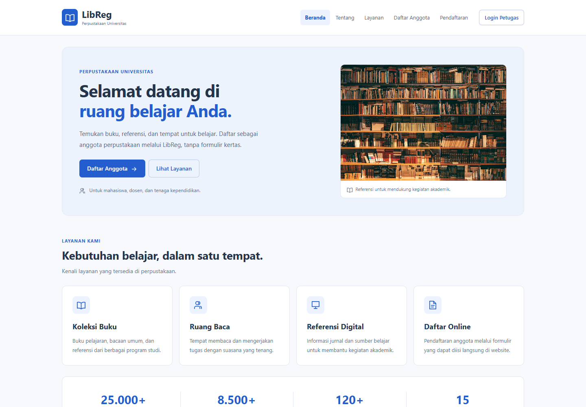
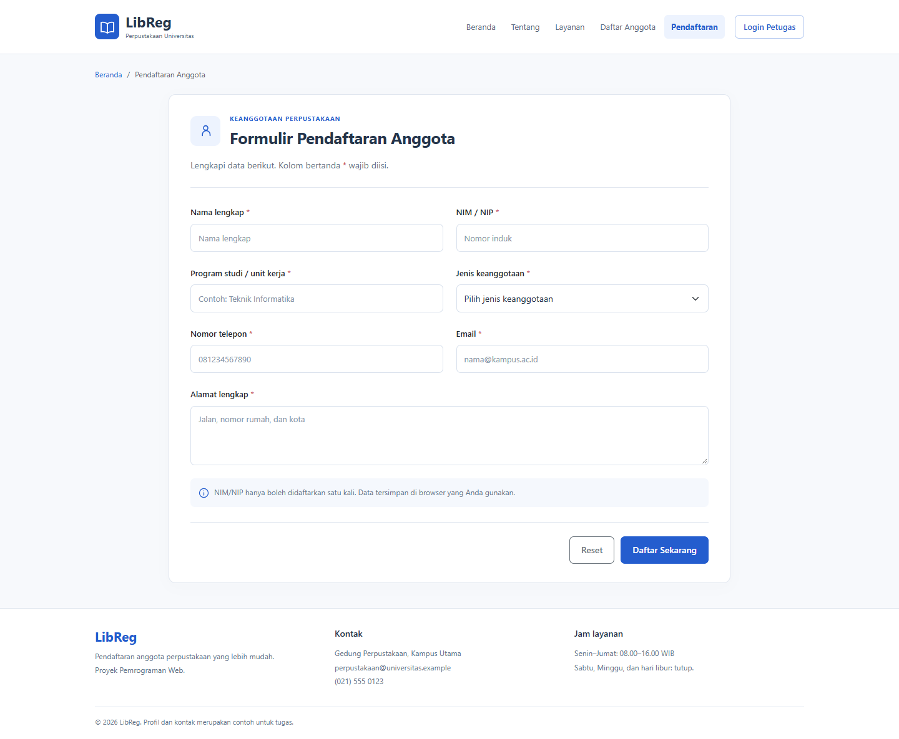
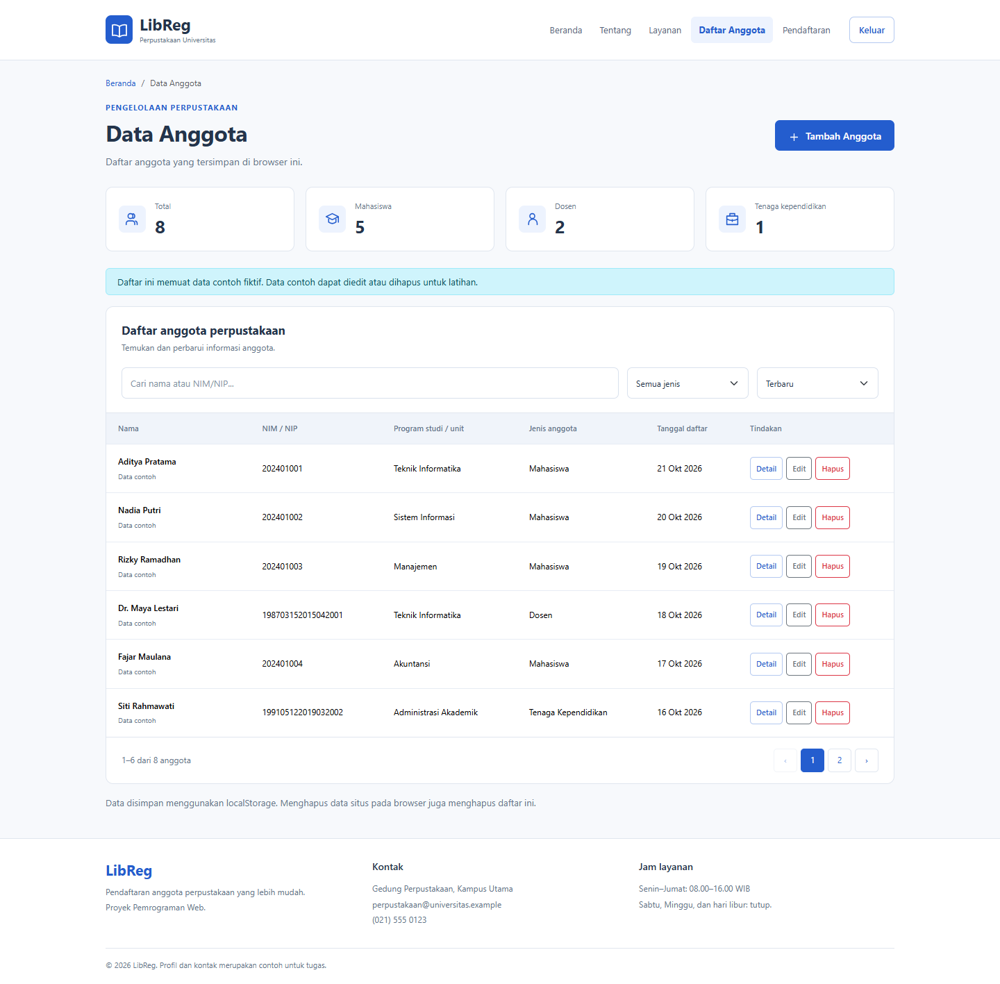

Catatan Proyek Pemrograman Web
Membuat Website Pendaftaran Anggota Perpustakaan: LibReg
Pada tugas kali ini, saya membuat website bernama LibReg. Website ini digunakan untuk pendaftaran anggota perpustakaan dan latihan mengelola data anggota. Teknologi yang dipakai adalah HTML, Bootstrap, CSS, serta JavaScript.
Kasus yang diberikan adalah perpustakaan kampus yang masih menerima pendaftaran dengan formulir kertas. Dari kasus tersebut, saya membuat form online dan halaman petugas agar data anggota dapat ditambahkan, dicari, diperbarui, dan dihapus.
Menentukan Halaman yang Dibutuhkan
Saya membagi website menjadi enam halaman: Beranda, Tentang Perpustakaan, Layanan, Pendaftaran Anggota, Daftar Anggota, dan Login Petugas. Pembagian ini membuat isi setiap file lebih jelas. Form pendaftaran tidak dicampur dengan tabel pengelolaan anggota.
LibReg/ ├── index.html ├── tentang.html ├── layanan.html ├── pendaftaran.html ├── anggota.html ├── login.html ├── assets/ │ ├── style.css │ ├── app.js │ ├── favicon.svg │ ├── images/library.jpg │ └── vendor/ │ ├── bootstrap.min.css │ └── bootstrap.bundle.min.js ├── screenshots/ ├── tests/ └── README.md
File style.css berisi gaya tambahan, sementara app.js menangani navigasi bersama, validasi, penyimpanan, dan pengelolaan data. Bootstrap disimpan di folder vendor supaya website tetap bisa digunakan tanpa mengambil file dari CDN.
Membuat Tampilan Beranda
Untuk tampilan, saya memakai navbar putih dengan identitas biru dan latar halaman yang terang. Hero berisi judul, penjelasan singkat, dua tombol, serta foto rak buku dalam panel biru muda. Kartu layanan dilengkapi ikon, sedangkan statistik dan fasilitas disusun agar mudah dibaca.
Susunan kolom menggunakan grid Bootstrap. Contohnya, teks hero berada di tujuh kolom dan foto berada di lima kolom pada layar sedang ke atas. Ketika dibuka di ponsel, keduanya tersusun ke bawah.
<div class="row align-items-center g-4">
<div class="col-md-7">
<h1>Selamat Datang di Perpustakaan Universitas</h1>
<p>Informasi singkat tentang perpustakaan.</p>
</div>
<div class="col-md-5">
<img src="assets/images/library.jpg"
class="hero-image" alt="Rak buku perpustakaan">
</div>
</div>
Form Pendaftaran Anggota
Form pendaftaran berisi tujuh data utama: nama lengkap, NIM/NIP, program studi atau unit kerja, jenis keanggotaan, nomor telepon, email, dan alamat. Pilihan jenis keanggotaan terdiri dari mahasiswa, dosen, dan tenaga kependidikan.
Pada desktop, beberapa kolom disusun berdampingan. Pada ponsel, semua kolom ditampilkan dalam satu kolom. Tombol Reset digunakan untuk mengosongkan isian dan tombol Daftar Sekarang untuk memproses data.

Validasi Sebelum Menyimpan
JavaScript memeriksa apakah kolom wajib sudah diisi. Email harus memiliki format yang benar, nomor telepon harus sesuai, dan NIM/NIP tidak boleh sama dengan anggota yang sudah terdaftar.
Nomor induk dibandingkan setelah spasi dihapus dan huruf diubah menjadi kapital. Dengan cara ini, nomor yang ditulis menggunakan spasi tidak dianggap sebagai nomor baru. Jika ada kesalahan, kolom diberi class Bootstrap is-invalid dan penjelasan ditampilkan di dekat kolomnya.
Setelah penyimpanan berhasil, halaman menampilkan pesan sukses dan kartu anggota simulasi. Kartu tersebut dapat dicetak melalui dialog cetak browser.
Menyimpan Data dengan localStorage
Karena tugas ini belum menggunakan backend, data anggota disimpan di localStorage. Data awalnya berbentuk array JavaScript, lalu diubah menjadi teks JSON dengan JSON.stringify() sebelum disimpan. Saat dibaca kembali, teks JSON diubah menjadi array menggunakan JSON.parse().
Berikut gambaran cara penyimpanannya:
// Contoh dasar menyimpan dan membaca daftar anggota.
localStorage.setItem(
"libraryreg.members.v1",
JSON.stringify(daftarAnggota)
);
const dataTersimpan = localStorage.getItem("libraryreg.members.v1");
const daftarAnggotaBaru = dataTersimpan
? JSON.parse(dataTersimpan)
: [];localStorage membantu menjaga data setelah halaman dimuat ulang. Namun, datanya hanya tersedia pada browser dan alamat situs yang sama. Data yang dibuat di satu komputer tidak otomatis muncul di komputer lain.
Halaman Petugas dan Pengelolaan Anggota
Halaman Daftar Anggota menampilkan tabel berisi nama, NIM/NIP, program studi atau unit kerja, jenis anggota, dan tanggal pendaftaran. Di atas tabel terdapat pencarian dan pilihan filter. Setiap baris memiliki tiga tombol: Detail, Edit, dan Hapus.
- Detail membuka informasi lengkap anggota.
- Edit membuka form yang sudah berisi data anggota untuk diperbarui.
- Hapus menampilkan konfirmasi sebelum data dihapus.
Detail, edit, dan konfirmasi hapus menggunakan modal Bootstrap. Setelah perubahan berhasil disimpan, daftar dan jumlah anggota ikut diperbarui. Notifikasi dipakai untuk memberi tahu hasil tindakan kepada pengguna.

Login Masih Berupa Simulasi
Untuk mencoba halaman petugas, saya menyediakan email petugas@libreg.demo dan password library123. Penanda sesi disimpan di sessionStorage. Login ini digunakan untuk latihan alur antarmuka dan belum menjadi sistem keamanan yang sesungguhnya.
Mencoba Website
Website dapat dibuka dari file index.html. Saya juga menyiapkan cara menjalankannya menggunakan server lokal Python:
cd LibReg
python -m http.server 4173Setelah server aktif, buka http://localhost:4173. Tombol Muat data contoh pada halaman anggota dapat digunakan untuk mencoba pencarian, filter, edit, dan hapus tanpa mengetik banyak anggota terlebih dahulu.
Bagian yang diperiksa mencakup form kosong, email salah, NIM/NIP duplikat, penyimpanan setelah reload, pencarian, edit, batal hapus, serta konfirmasi hapus. Tampilan juga diperiksa pada ukuran desktop dan ponsel.
Proyek dapat diakses melalui libreg.boysteven.com. Kode sumbernya tersedia di repositori Boyeep/LibReg. Server lokal tetap dapat digunakan untuk mencoba perubahan sebelum memperbarui situs. Jika dikembangkan lebih lanjut, aplikasi dapat ditambah backend dan database agar data bisa digunakan bersama oleh petugas di beberapa perangkat.
Yang Dipelajari dari Tugas Ini
Melalui LibReg, saya mempraktikkan penggunaan komponen Bootstrap, pembuatan form, validasi dengan JavaScript, dan penyimpanan data sederhana. Bagian pentingnya adalah menghubungkan setiap tindakan pada antarmuka dengan perubahan data: menambah melalui form, membaca di tabel, mengedit melalui modal, lalu menghapus setelah konfirmasi.
Buka website LibReg · Source code GitHub · Lihat jawaban soal 1–4